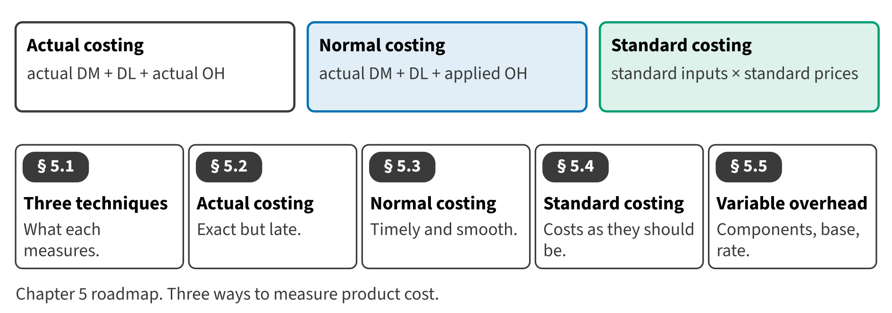

Part II · Measuring product cost · Chapter 5
Actual, Normal and Standard Costing
التكاليف الفعلية والعادية والمعيارية
In May 2027 the Beverages bottling line filled 70,000 cases of juice. What did one case cost? The answer depends on how Orontes measures the materials, the labor and above all the overhead.

Start here
Then
What this chapter is tested on
| LOS | Official statement (ICMA, 2024) | In plain words | Depth here |
|---|---|---|---|
| D.1.e | identify and define cost measurement techniques, such as actual costing, normal costing, and standard costing; calculate costs using each of these techniques; identify the appropriate use of each technique; and describe the benefits and limitations of each technique | Define actual, normal and standard costing, calculate costs with each, and describe their use, benefits and limitations. | Full treatment + Extended Example |
| D.3.e | identify the components of variable overhead expense | Identify the components of variable overhead. | Full treatment |
| D.3.f | determine the appropriate allocation base for variable overhead expenses | Determine the right allocation base for variable overhead. | Full treatment |
| D.3.g | calculate the per-unit variable overhead expense | Calculate variable overhead per unit. | Full treatment |
The official statements are quoted from the ICMA Learning Outcome Statements (effective September 1, 2024). The plain-words column restates them in simpler English. The exam may test any outcome up to Level C.
What you already know
Chapter 6 in this book, the job costing pilot, already used normal costing: actual direct costs plus overhead applied at a predetermined rate. This chapter explains why, and compares it with the other two techniques.
The 8 key terms
Every scene has Check Answers and Try Again. Try Again reshuffles rather than revealing. When you are wrong, the first thing you read is the reason for the option you chose, taken from the book's own explanations. Progress is saved in this browser.